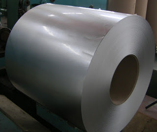

Jual Floor Deck Harga Murah di Tarakan ☎ 0822 4582 0777 (Rinanti)
Galvalum sudah menjadi primadona bagi banyak orang yang bekerja dalam industri pembangunan. Layaknya projek pembangunan yang magak di tengah jalan karena tidak mempunyai atap yang bisa dipakai di atasnya. Adapula atap galvalum yang berbentuk unik yaitu atap lengkung galvalum. Apa yang terjadi? Tentu anda tahu, atap tersebut tidak akan bertahan lama dan bahkan bisa langsung roboh karena tidak adanya pondasi yang menyangganya.
Distributor & Supplier Floor Deck (Bondex)

Biasa di gunakan sebagai alas dalam proses pembuatan lantai dan atap dak beton. Untuk bahan utamanya sendiri umumnya berasal dari plat baja jenis galvanized dilengkapi dengan tulang. Floordeck atau bondek ini adalah material bangunan yang terbuat dari bahan baja galvanis dengan kekuatan tinggi yang mampu menahan beban struktur pelat yang ada pada lantai. Sedangkan untuk panjang dan juga lebarnya ada beberapa variasi.
Floor deck berkualitas tinggi bisa anda dapatkan dengan mudah yaitu mengunjungi situs dis.or.id. Disana anda bisa mendapatkan floor deck Tarakan yang anda inginkan dan tentunya dengan harga yang jauh lebih murah di bandingkan dengan tempat lainnya.
Info Pemesanan Selengkapnya
Google Maps: https://www.google.com/maps/d/u/0/viewer?mid=1vSGA7eD7ctB-ierGsro9yf6LdDAQHeLS&ll=-6.2537250295094555%2C106.82745&z=15
Note: https://www.facebook.com/notes/distributor-of-industrial-supply/kontraktor-jasa-floor-hardener/1783168878649658/
Event: https://www.facebook.com/events/534395173592364/
Portfolio Produk: https://www.facebook.com/1681607345472479/photos/?tab=album&album_id=1685055588460988
Distributor & Supplier Besi Beton

Karena perkembangan suatu proses pembangunan maka hasil bola material yang dapat mendukung pembangunan tersebut agar terlihat lebih kokoh dan juga awet.
Jika anda saat ini sedang membutuhkan besi beton berkualitas tinggi. Di sana anda akan mendapatkan berbagai macam jenis serta ukuran dari besi beton dengan harga yang cukup terjangkau dan mutu yang sangat terjamin. Kualitas dan mutunya pun telah terjamin. Jadi, anda tidak perlu ragu lagi.
Distributor & Supplier Steel Grating

Plat Grating terbaru memiliki kualitas terbaik yang bisa digunakan untuk sarana pembangunan pada industri hingga pertambangan. Plat Grating tersebut dibuat dari jenis baja dengan kualitas yang tinggi kemudian dilas antara satu dengan yang lain. Grating tersebut sangat bermanfaat dan penting untuk keamanan Anda. Tentunya dengan berbagai model dan tipe yang beragam.
Maka dari itu, jika anda membutuhkan steel grating untuk keperluan pembangunan, anda bisa langsung saja mengunjungi dis.or.id. Karena disana anda bisa mendapatkan steel grating yang berkualitas dan harga yang ditawarkan pun sangat terjangkau dan pastinya cocok untuk kantong anda.
Distributor & Supplier Pipa (Hitam/Gas, Galvanis)

Mungkin anda masih bingung mengenai manfaat pipa hitam ini dalam kehidupan, padahal jika dilihat lagi ada banyak manfaat yang diperoleh dengan mengaplikasikan pipa hitam gas galvanis. Pipa hitam banyak sekali diaplikasikan pada area pertambangan minyak gas karena ia memiliki struktur yang 3 kali lebih kuat dari jenis pipa biasa. Terlihat dari namanya saja, pipa hitam ini memang dibuat khusus untuk kebutuhan pertambangan minyak gas, untuk itu nama lain dari pipa hitam adalah pipa gas. Sifatnya yang tahan karat menjadikan pipa ini dapat diaplikasikan disegala perubahan cuaca Indonesia. Ukuran pipa besi hitam terkecil adalah ½ inci, dan paling besar 40 inci. Anda dapat mengkonsultasikan keperluan pipa hitam tersebut pada kami dan mengetahui informasi harganya lebih detail.
Distributor & Supplier Kawat Bronjong/Gabion

Hanya saja, karena ini berfungsi untuk mencegah erosi, maka kualitas kawat berbeda dengan kawat yang sering digunakan. Kawat ini berfungsi agar tidak terjadi gerusan akibat arus air yang mengakibatkan tiang penyangga rusak di mana hal ini bisa berakhir dengan rubuhnya jembatan.
Jika sat ini anda sedang membutuhkan kawat bronjong, anda bisa langsung saja mengunjungi dis.or.id. Jika anda tengah membutuhkna kawat ini, anda bisa saja langsung mengunjungi dis.or.id. Sehhingga, anda bisa leluasa memilih kawat bronjong mana yang susuai dengan yang anda butuhkan.
Distributor & Supplier WF H-beam

Jenis profil baja struktural yang saat ini tengah populer di tengah masyarakat adalah besi WF. Konstruksi baja banyak yang memakai besi ini untuk bahan bajanya. untuk harganya, besi WF tergolong cukup terjangkau dan tidak terlampau mahal. Entah dari sisi kekuatan tekan nya atau tariknya.
Jika membawanya Anda juga tidak perlu khawatir keberatan karena besi ini lebih ringan dan praktis.
Untuk itu bagi anda yang sedang mencari besi baja dengan kualitas terbaik. Harga yang murah tentunya di dis.or.id juga menjamin kualitas dan mutu terbaiknya juga. Disana anda bisa mendapatkan besi wf yang anda inginkan. Pastinya dengan harga yang sangat terjangkau.
Distributor & Supplier Expanded Metal
.JPG)
Expanded metal atau yang biasa dikenal dengan sebutan X.P.M. ini merupakan salah satu produk hasil dari kemajuan teknologi saat ini. Umumnya penggunaan dari Expended Metal ini adalah untuk walkway atau catwalk, anak tangga pada tower serta banyak juga digunakan di dermaga/konstruksi lepas pantai/pertambangan. Selain itu, Expanded Metal ini juga memiliki banyak jenis.
Terdapat berbagai ukuran dari expanded metal yang bisa anda pilih dan anda pesan sekarang juga. Kunjungi dis.or.id untuk memesan expanded metal dengan harga yang murah serta mutu yang terjamin.
Distributor & Supplier Plat (Hitam, Kapal, Bordes, Strip)

Plat yang satu ini mungkin yang paling banyak kita jumpai, bukan sebagai plat bahan bangunan namun sering digunakan sebagai plat lantai pabrik, kendaraan dan berbagai fungsi lainnya. Pada umumnya disebut plate kapal dikarenakan biasa digunakan untuk bahan pembuatan badan kapal dan mempunyai standart spesifikasi material yang beragam untuk spesifikasi. Dengan membeli secara online, anda akan lebih efektif dan efisien dalam melakukan pemesanan. Plat besi bordes ini saat ini lebih banyak digunakan sebagai bahan pembuatan mobil, terutama mobil pengangkut seperti truk, pick up, dan lain sebagai nya.
Segera hubungi nomor dis.or.id dan segera order karena dis.or.id adalah agen resmi yang langsung mengambil plat hitam ini dari pabriknya. Disini dis.or.id siap melayani anda untuk mencarikan plat yang anda inginkan.
Distributor & Supplier Atap Galvalum

Atap galvalum umumnya dijual dengan sistem per lembar.
Galvalum atau biasa disebut baja ringan, terbukti mempunyai banyak kelebihan jika dibandingan dengan kayu. Kerap kali disebut baja ringan, kekuatannya tidak kalah bila dibandingkan dengan baja konvensional.
Galvalum diklaim mempunyai daya tahan karat 4x lebih kuat dari galvanis. Namun, banyak anggapan yang mengatakan bahwa memasang galvalum akan membuat rumah akan terasa panas dan berisik. Galvalum mampu menahan panas hingga memantaulkan sinar UV. Perbedaan ukurannya terletak pada panjang, lebar dan tebalnya.
Distributor & Supplier Atap Lengkung

Dewasa ini, atap lengkung sangat dibutuhkan bagi berbagai macam jenis bangunan. Tidak terkecuali gudang, halte, maupun peneduh bagi kendaraan. Tidak hanya itu saja kegunaan atap lengkung.
Saat ini banyak sekali jenis atap dengan berbagai bahan dasar pembuatnya. Salah satu jenisnya adalah atap lengkung. Salah satunya juga harus kuat menahan derasnya air hujan.
Penggunaan atap lengkung contohnya adalah pada pembuatan atap stadion. Maka sudah pasti bahwa kualitas atap tersebut sangat diragukan. Nah, atap lengkung inilah yang berjasa membuat stadion tersebut terlihat megah. Tentunya inilah yang anda inginkan sebagai konsumen yang menggunakan atap lengkung sebagai pilihan anda. dis.or.id adalah distributor terpercaya untuk anda. Maka anda sudah berada di tempat yang tepat.
Distributor & Supplier Truss Canal C

Rayap tentunya tidak dapat menggerogoti besi yang satu ini. Sehingga akan awet bahkan dengan karat sekalipun. Sehingga gabungan keduanya menghasilkan kualitas yang bila ditandingkan dengan bahan gabungan lain maka tidak akan kalah berkualitasnya. Jarak antar reng galvalume perlu diperhatikan. Besi ini tidak dibuat oleh tukang las biasa, melainkan di olah oleh pabrik yang khusus bergerak dibidang peleburan besi dan logam. Namun karena semakin susahnya mendapatkan raw materialnya, dan harga yang semakin ahal maka pemilihan besi kanal C menggantikan fungsi kayu dinilai adalah langkah yang tepat. Disana anda akan banya kmendapat info menarik seputar truss besi kanal c dan masih banyak lagi.
Distributor & Supplier Hollow Galvalum

Hollow galvalum menjadi primadona bagi banyak orang dikarenakan uniknya komponen berikut ini.
Selain dinilai lebih kuat, ternyata juga lebih ekonomis. Ukuran hollow galvalum plafon yang paling bagus untuk digunakan yaitu ukuran 2X4 dengan tebal 0,25. Sehingga tidak heran bila hollow galvalum menjadi produk paling dicari oleh masyarakat dalam industri pembangunan. Studi penelitian telah mengungkapkan bahwa kerangkan plafon menggunakan jenis hollow ini bisa bertahan puluhan tahun. Namun sayangnya masih banyak pekerja bangunan yang masih terkendala dari segi pemasangan nya.
Distributor & Supplier Seng Gelombang

Seiring perkembangan jaman, seng gelombang mengalami peningkatan dari waktu ke waktu. Ia lebih mudah di pasang dan harga jual yang ekonomis dipasaran membuat seng gelombang memiliki banyak peminat. Seng gelombang adalah salah satu solusi yang kami rekomendasikan untuk anda. Seng gelombang sekarang ini diburu banyak masyarakat untuk menutup bagian atap bangunan mereka. Meskipun begitu, nyatanya seng gelombang memiliki kekurangan yakni ia lebih cepat menyerap panas.
Tetapi, janganlah ragu dengan hal demikian. Maka, anda cukup mengunjungi situs dis.or.id sehingga anda akan mampu terpuaskan dengan keingin tahuan anda tentang seng gelombang. Seng gelombang dengan warna ataupun transparan amatlah awet bila dibandingkan dengan bahan pembuat atap lainnya.
Distributor & Supplier Plat Seng

Membeli plat galvanis memang bisa dilakukan dengan cara lembaran atau per meter. Masing masing ukuran tersebut memiliki harga yang berbeda beda, karena biasanya harga akan tergantung dari berat dalam kilogram.
Hal ini tidak lain dikarenakan plat galvanis lembaran memiliki ukuran yang lebih luas dan bermeter meter. Masalah klasik dari penggunaan seng adalah mudah terkena karat atau terjadi korosi, menimbulkan suara bising ketika hujan, dan juga membuat rumah anda terasa panas. Harga plat galvanis lembaran tentu nya akan lebih mahal jika dibandingkan yang per meter.
Disana banyak sekali info yang sangat berguna untuk anda yang sedang mencari plat seng & plat galvalum sesuai kebutuhan anda.
Distributor & Supplier Genteng Metal

Sebelum itu, kami akan menjelaskan apa itu genteng metal dan genteng metal pasir. Namun sedikit demi sedikit orang mulai lebih memilih genteng metal karena lebih banyak kelebihan yang dimilikinya. Secara sederhana genteng metal adalah salah satu jenis genteng yang terbuar dari kumpulan berbagai bahan logam dan memiliki ciri kas mengkilat, ringan dan tahan lama. Produk SNI kami sudah dijamin keasliannya dan tidak KW.
kami berusaha mencari kepuasan pelanggan kami.
Distributor & Supplier Besi Wiremesh

Besi lonjor yang disusun rapi hingga membentuk anyaman adalah besi wiremesh. Nama lain dari besi wiremesh ini adalah besi anyam. Bentuk anyam dari besi wiremesh tersedia bermacam-macam, ada yang berbentuk kotak ada juga yang berbentuk jajar genjang, setiap jenis besi wiremesh dapat anda pilih sesuai kebutuhan. Dengan memiliki bentuk yang mirip seperti besi anyam, pemanfaatan besi ini sangat banyak terutama dalam dunia konstruksi, salah satunya adalah sebagai plat lantai dan dak beton. Besi wiremesh terdiri dengan berbagai macam ukuran ketebalan, ketebalan 8 – 10 digunakan untuk bangunan bertingkat. Sedangkan wiremesh ukuran 4 sampai 6 untuk kebutuhan bangunan biasa. Besi wiremesh dengan kualitas bagus biasanya akan diproses dengan sistem las otomatis, sehingga susunan kawatnya rapi dan jaraknya teratur. Untuk anda yang membutuhkan besi ini maka hubungi kontak yang tersedia.
Distributor & Supplier Pagar BRC

Pagar brc di produksi dengan material besi yang memiliki ketebalan berbeda-beda, ada yang 5mm – 8mm. Potongan besi berdiameter tertentu tersebut dig abungkan dengan bantuan mesin las wiremesh. Pagar BRC termasuk pada kategori pagar minimalis yang siap pakai. Kekuatannya pun tidak dapat diragukan lagi karena ia dibuat dengan baja yang bertegangan tinggi, U55 grade dan tegangan ijin 2900kg/cm2. Lapisan galvanis yang terdapat pada pagar BRC menjadikannya tahan akan korosi maupun karat, tak heran bila umur pengaplikasian dari pagar BRC bisa mencapai 10 tahun. Anda dapat mengunjungi situs resmi kami di www.dis.or.id, karena pada situs ini terdapat informasi detil mengenai spesifikasi ukuran dan harga.
Distributor & Supplier Kawat Loket, Kawat Harmonika

Kawat loket harmonika sering sekali diaplikasikan pada kebutuhan kawat pagar dan penutup jendela, hal ini tentu tidak tidak lain karena struktur bentuk dari kawat loket harmonika sendiri mirip seperti anyaman yang kuat. Pemanfaatan kawat loket harmonika dalam kehidupan sehari-hari sangat banyak, selain untuk industri konstruksi banyak keperluan rumah yang memanfaatkan jenis kawat ini. Apalagi jenis kawat galvanis yang digunakan tahan karat dan korosi, sangat awet bila anda bandingkan dengan jenis kawat biasa. Kawat loket harmonika yang kami tawarkan berkualitas mutu tinggi sehingga cocok untuk berbagai keperluan, segera hubungi kami untuk informasi pemesanan! Kami dapat menerima segala kebutuhan kawat harmonika anda dengan maksimal ukuran lebar sampai 3 meter.
Distributor & Supplier CNP & UNP

Besi UNP / besi kanal merupakan besi yang memiliki bentuk lengkung seperti huruf U yang banyak diaplikasikan untuk sambungan maupun dudukan atap. Selain itu, besi ini banyak dimanfaatkan untuk keperluan girts atau penutup dinding. Sedangkan untuk besi CNP sendiri lebih banyak digunakan pada dinding cladding atau gording. Banyak orang yang menyebut besi CNP ini sebagai profil C karena bentuknya melengkung seperti huruf C, meskipun begitu besi UNP dan CNP adalah material konstruksi yang berbeda. Anda tak hanya bisa manfaatkan untuk kebutuhan konstruksi saja, bahkan untuk kebutuhan otomotif sekalipun.
Distributor & Supplier Besi Siku

Setiap konstruksi bangunan tentu tidak akan luput dari kebutuhannya terhadap besi siku. Besi siku menjadi salah satu material yang dapat diandalkan sebagai besi penyangga. Dilihat dari namanya saja, sudah jelas jika besi siku merupakan besi logam yang berbentuk dua garis tegak lurus membentuk 90 derajat. Untuk panjangnya, pada umumnya besi siku dibuat dengan ukuran 6 meter dan ketebalan lebar yang berbeda-beda. Untuk info selengkapnya, anda dapat menghubungi kontak yang telah tersedia. Informasi lebih detail akan anda dapatkan dengan menghubungi kontak yang tertera pada website dis.or.id.
Distributor & Supplier Hollow (Hitam, Galvanil, Galvanis)

Sekarang ini besi hollow pemanfaatannya sudah melebihi kayu, meskipun terbuat dari besi kualitasnya pun tidak dapat diragukan lagi.Sekarang sudah banyak orang yang beralih pemanfaatan dari kayu menjadi menggunakan besi hollow.Banyak orang yang mulai beralih dari pemanfaatannya yang menggunakan kayu beralih pada hollow hitam galvanil.Besi hollow saat ini menjadi material pengganti kayu yang sangat baik. Apalagi jika mengingat menggunakan besi hollow akan membuat pengerjaan konstruksi selesai lebih cepat. Tentu saja hal ini karena kelebihan yang ditawarkan oleh besi hollow sendiri tidak dimiliki kayu, material yang kokoh, pengerjaan cepat, dan tidak mudah rapuh. Tentu saja hal ini dikarenakan kekuatan yang dimiliki hollow galvanis tidak bisa dibandingkan dengan kayu, material ini juga lebih mempercepat pembangunan konstruksi. Besi hollow memiliki kekuatan yang lebih kokoh dan dapat mempercepat pekerjaan konstruksi karena strukturnya yang mudah diatur. Dis.or.id pun telah menyediakan produk besi hollow hitam galvanis ini untuk dapat anda pesan langsung! Tersedia ukuran besi hollow 40 x 40 x 2 mm x 6 Meter, 50 x 50 x 3 mm x 6 Meter hingga ukuran 150 x 150 x 5 mm x 6 meter dan masih banyak lagi. Anda bisa menghubungi kontak yang telah tersedia untuk informasi produk lebih detail. Jika anda tertarik memesan besi hollow ini maka tentukan dulu total kebutuhan anda, hubungi kami segera untuk info lebih lanjut!Selain sebagai pengganti material kayu, besi hollow yang kami jual dapat anda manfaatkan untuk kepentingan teralis, pintu besi, pagar, dan lain sebagainya.Bagi anda yang membutuhkan besi hollow, anda dapat menghubungi kami, besi hollow yang kami tawarkan cocok untuk kebutuhan pagar, pintu besi, teralis, dan lain sebagainya.Selain sebagai pengganti material kayu, besi hollow banyak dimanfaatkan untuk kebutuhan pintu besi dan teralis. Untuk itu hubungi kontak kami segera!
Distributor & Supplier Pipa Pancang

Pipa pancang yang memiliki fungsi cukup penting dalam sebauh proyek tentu saja tersedia di sini. Sedangkan dari namanya saja tetu sudah sangat familiar dengan konstruksi yang satu ini. Terutama bagi Anda yang sedang membangun proyek di atas permukaan laut, tentu saja ini akan sangat membantu. Sedangkan dari segi spesifikasi, pipa pancang tersedia dalam berbagai ukuran. sedangkan dari segi spesifikasi maupun ukuran, pipa pancang cukup variatif dan bisa di sesuaikan dengan kebutuhan. Hal ini tentu akan sangat membantu. sedangkan untuk kualitas yang Anda dapatkan, jangan khawatir karena bisa di jamin mutunya tinggi. Sedangkan untuk kualitas pipa pun akan sangat terjamin dengan mutu terbaik. Bukan hanya kualitas bahannya saja yang bagus tetapi juga untuk pembuatannya. Dengan begini, maka dalam penggunannya, pipa pancang juga bisa di aplikasikan secara maksimal.
Jasa Pondasi Bor (Strouss/Borepile)

Dalam pembangunan rumah, tentu saja setiap orang menginginkan hasil terbaik sehingga bisa membuatnya puas, termasuk juga untuk pengeboran pondasi. Selanjutnya, untuk masalah di mana jasa ini bisa di temukan, maka Anda bisa memesannya di sini dengan mudah. Di sini jasa pondasi bor melayani pengeboran yang mana hasil dan kualitasnya terjamin. Berbicara lebih dalam tentang pengeboran, tersedia dua jenis yang bisa Anda pilih. Untuk masalah kualitas hasilnya pun sama saja jadi tidak perlu khawatir. sedangkan jika di lihat dari segi kualitas, sebenarnya kedua jenis ini sama-sama bagus. Sedangkan untuk hasil pengeboran manual maupun yang otomatis atau menggunakan mesin, secara umum sama-sama bagusnya.
Distributor & Supplier Genset (New/Second)

Untuk genset atau singkatan dari generator set ini, pasti juga sudah banyak di kenali. Dalam penggunaannya, genset ini menggunakan bahan bakar berupa solar. Sedangkan dalam pembeliannya, Anda bisa memilih antara genset baru atau pun yang second. Dan kedua jenis tersebut bisa di dapatkan di DIS.
Dalam hal ini perlu di ketahui bahwa harga genset memang cukup tinggi. Hal ini pun menjadi sebab banyak yang lebih memilih pembelian genset yang bekas. genset sendiri tersedia dalam berbagai pilihan merk sesuai perusahaan yang mengeluarkan nya dan bisa Anda jadikan pilihan mana yang sekiranya paling sesuai. Kini ditributornya pun telah tersear di mana-mana sehingga lebih mudah.
Distributor & Supplier UPS

Untuk alat elektronik yang satu ini, biasanya memang belum cukup terkenal kecuali untuk dunia elektro. Terkecuali jika membicarakan dunia elektro. Sedangkan dalam pengertiannya sendiri secara singkat UPS adalah salah satu alat elektronik di mana bisa menjadi sumber listrik ketika sumber utamanya putus. Sejauh ini tentu saja akan sangat penting memiliki UPS terutama bagi pengguna komputer. Bukan hanya kualitas spesifikasi yang berbeda, akan tetapi juga kapasitas listrik yang bisa di simpan. Terkait akan penjualan pun, di sini DIS menyediakan UPS juga dengan kualitas yang sangat memadai bagi Anda. Sedangkan untuk memiliki UPS berkualitas, Anda bisa merujuk pada DIS.
Distributor & Supplier Forklift (Second)

Kini forklif memang cukup banyak di gunakan baik dalam industri kecil, menengah maupun besar. Termasuk untuk forklif yang dalam kondisi bekas. mengimbangi akan hal itu, tidak heran jika kini penjualan forklif ada di mana-mana. sedangkan untuk pembeliannya, memang bisa memilih antara yang baru dan bekas. Dengan bahan yang terjamin tersebut, tentu saja tujuan penggunaan forklif ini akan semakin memudahkan setiap aktifitas di industri Anda. Apalagi, di sini yang di tawarkan adalah forklif yang siap pakai.
Jasa Pembuatan Moulding Inject

Dalam hal ini kalau masalah kuantitas, maka tidak perlu bingung karena berapa pun kebutuhan Anda, di sini akan selalu siap melayani. sedangkan untuk masalah kuantitas moulding inject nya, jangan khawatir karena tanpa batasan cetak, berapa pun keinginan Anda, pasti akan di layani. Jika ingin mendapatkan moulding inject dengan kualitas terbaik, maka memang di sini lah tempatnya. Selanjutnya, silahkan Anda sesuaikan pilihannya dengan kebutuhan yang sedang Anda cari.
Jasa Pembuatan Sparepart Mesin Produksi / Alat Berat

Dalam setiap proyek pembangunan, adanya alat berat atau sparepart tentu bukanlah hal yang asing pula. terkait akan hal itu, bisa di akui pula bahwa pembuatan mesin ini sangat penting untuk menjadi perhatian. Selanjutnya, ketika mendapatkan jasa terpercaya, hasil barangnya pun akan terjamin. Terkait dengan hal itu, perlu Anda ketahui bahwa pembuatan sparepart yang salah, bisa jadi akan membahayakan si pengguna. alasannya adalah, jika ada kesalahan yang cukup fatal, maka bisa jadi akan membahayakan pekerja yang sedang menggunakannya. Sedangkan harga penawaran, untuk setiap alat berat bisa berbeda tergantung jenis dan ukurannya. hal ini di sebabkan karena jika ada kesalahan, maka akibatnya akan fatal dan bisa membahayakan para pekerja yang menggunakannya. Nah, kalau di DIS, maka Anda pun akan mendapatkan alat berat yang berkualitas dan di jamin aman.
Jasa Service Elektronik (Kompor Gas, Dispenser, Mesin Cuci)

Padahal sebenarnya banyak penawar jasa yang bersedia dan sanggup memperbaiki setiap kerusakan elektronik sebagai penyeimbang semakin bekembang nya teknologi. Jika Anda bingung di mana memperbaiki barang tersebut, bisa saja langsung merujuk pada salah satu jasa yang di tawarkan DIS. Kalau berbicara masalah kualitas, jangan khawatir karena DIS menyediakan service handal yang akan melakukan perbaikan sempurna. dengan demikian Anda kan semakin di untung kan sekaligus mendapatkan nilai ekonomis nya karena tidak harus berganti barang baru. Nah, apa pun barang yang perlu di perbaiki, kini akan kembali berfungsi seperti semula.
Sudahkah anda mengetahui arti penting dari sebuah komponen bernama atap? Keberadannya amat penting bukan? Bahkan bisa disebut kebutuhan primer setiap bangunan. Hanya bangunan yang terbengkalai yang tidak mempunyai atap. Memang, ada beberapa bangunan mewah yang sudah memakai beton sebagai atapnya. Karena tujuan utama dari rumah adalah menaungi pengguna yang ada di dalamnya. Seperti yang saya jabarkan diatas fungsi atap sudah tidak terbantahkan dan tidak dapat digantikan lagi. Terima kasih, semoga artikel tersebut bermanfaat.